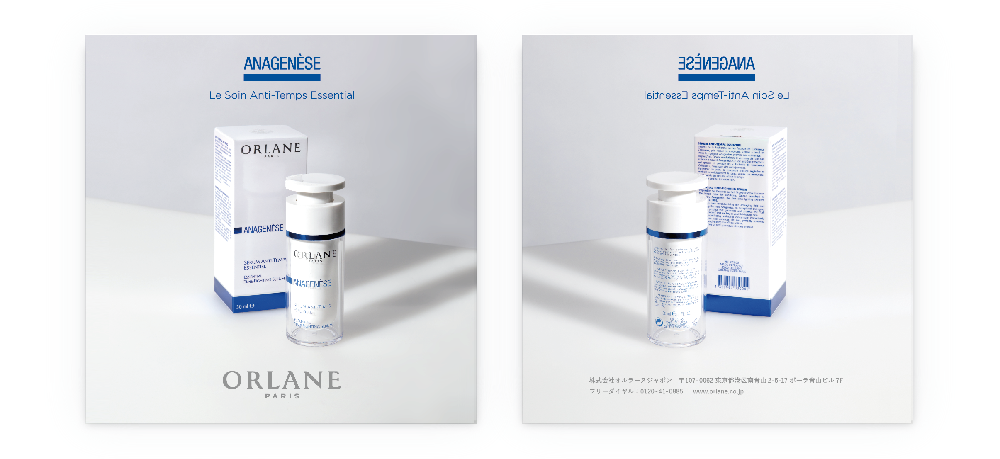
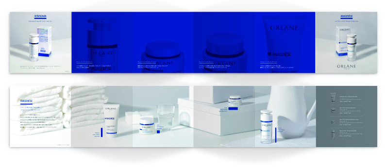
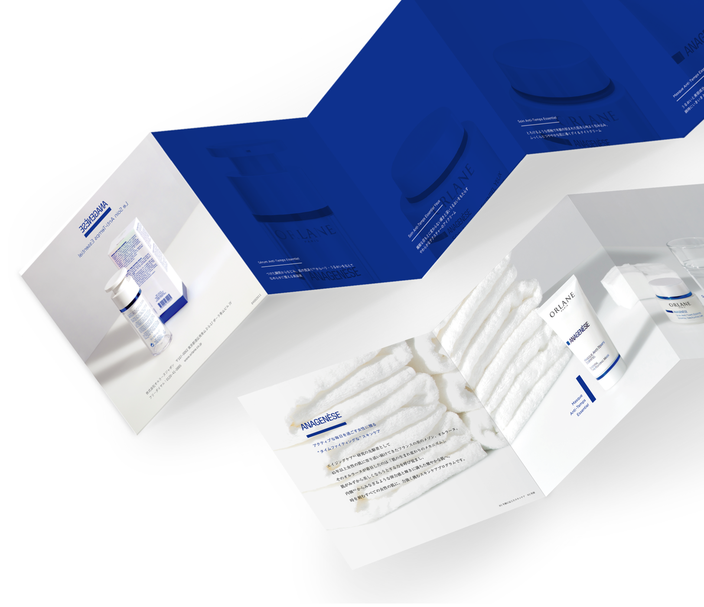
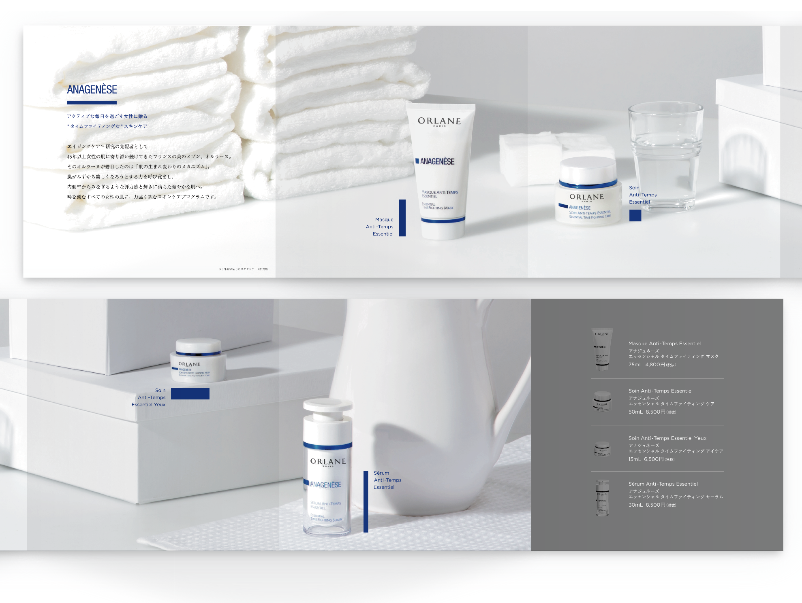

ANAGENESE
ORLANE PARIS JP株式会社
リーフレット
2016. 01




リーフレット
2016. 01
エイジングスキンケア化粧品ブランドORNANEの若年層向けライン「ANAGENESE」の製品紹介リーフレット。
メインである高級ラインとの差別化をしたいとのご依頼のもと、生活感を醸し出すモチーフを配置し、日常風景の中に製品が置かれている様を表現しました。
その中でも、ある程度のラグジュアリー感は残すため、全てを白色で統一し、製品の青色を主色とした抑えられた色数での表現とすることによって、現実感を薄め、落ち着いた様相を感じさせる演出としました。
＜ BACK
© Moeri Ito